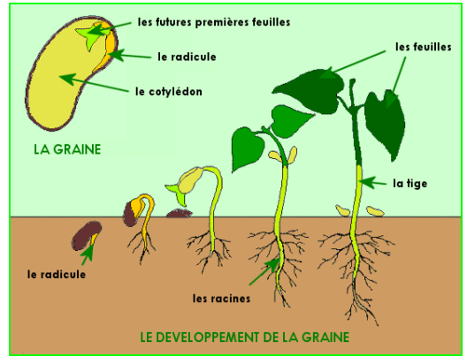
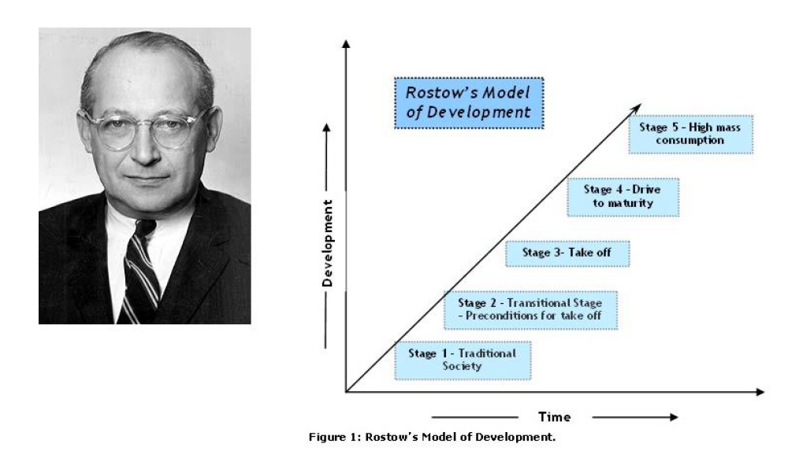

9 Introduction à l’anthropocène
9.1 Objectifs du module
Le cours comprend trois parties :
Histoire de la notion de développement durables : du progrès à l’anthropocène Les grands enjeux climatiques L’anthropocène : accélération, récit , démocratie ,…
Acquis d’apprentissage (objectifs d’apprentissage) de l’unite¿ d’enseignement :
Avoir une compréhension des différentes notions & outils (développement durable, soutenabilité, anthropocène, inertie, incertitude, irréversibilité , éco circulaire, permis, …) Avoir développé une posture critique et réflexive sur l’évolution des concepts du développement durable à l’anthropocène : la critique ne consiste pas à dire que les choses ne sont pas bien comme elles sont. Elle consiste à voir sur quels types d’évidences, de familiarités, de modes de pensée acquis et non réfléchis reposent les pratiques que l’on accepte » (Foucault, 1994) - et la réflexivité consiste à être capable de prendre conscience de son propre point de vue, de l’expliciter et de le soumettre à l’analyse.
9.2 La notion de développement durable
Le premier chapitre de ce cours a porté sur la notion de développement durable.
9.2.1 Introduction : Un Concept Hybride et contesté
Le concept de “développement durable”, loin d’être une notion scientifique pure et univoque, se présente comme un “concept hybride”. Tel que défini par Pierre Stassat dans son cours “Introduction à l’Anthropocène”, il s’agit d’un agencement complexe où se mêlent des connaissances scientifiques, des normes éthiques et des croyances. Cette nature composite le rend sujet à une multitude d’interprétations et d’usages, souvent contradictoires. L’objectif de ce rapport est de synthétiser la première partie de ce cours afin de décortiquer la genèse de cette notion, d’exposer ses ambiguïtés fondamentales et de retracer son évolution politique et institutionnelle.
L’objectif du cours est de porter un “regard critique” plutôt que d’enseigner une théorie unique.
Pour ce faire, il est essentiel de commencer par déconstruire le substantif “développement” lui-même, avant d’analyser l’impact de l’adjectif “durable” qui lui a été accolé.
9.2.2 La notion de “Développement” : origines, modèle dominant et critiques
Pour comprendre les fondations sur lesquelles le “développement durable” a été construit, il est indispensable de déconstruire le terme “développement”. Cette section explore ses origines biologiques, sa transposition vers un modèle économique et politique hégémonique au \(XXe\) siècle, ainsi que les critiques fondamentales qui ont mené à sa remise en cause.
9.2.2.1 Des origines biologiques à la transposition économique
À l’origine, le terme “développement” est issu de la biologie. Il y désigne l’idée d’un accomplissement ou de la réalisation d’un être vivant. Le cours insiste sur la distinction conceptuelle fondamentale entre la croissance et le développement : la croissance est un processus principalement quantitatif (augmentation de la taille, du poids), tandis que le développement est un processus qualitatif, caractérisé par une direction (de la graine à la plante), des étapes successives, un caractère cumulatif et une irréversibilité.

Dans les années 1930, ce concept a été transposé au champ de l’économie. L’objectif était alors d’identifier des “lois” universelles permettant d’expliquer et de favoriser la croissance économique des nations, en postulant un cheminement similaire à celui d’un organisme vivant vers sa maturité.
9.2.2.2 Le Modèle de Rostow : Un processus linéaire vers la consommation de masse
La théorie de l’économiste Walt Rostow cristallise cette vision du développement économique. Elle légitime une trajectoire unique et universelle en postulant que toute société traverse un processus historique linéaire et nécessaire, qui se déroule en cinq étapes séquentielles :

- La société traditionnelle caractérisée par une économie essentiellement agricole, des techniques de production traditionnelles et une faible productivité. L’organisation sociale est centrée sur le cadre familial.
- Les conditions préalables au décollage, l’épargne et l’investissement émergent et se développent, permettant une augmentation de la production agricole et l’essor d’une industrie naissante, soutenue par le commerce et le rôle de l’État.
- Le décollage (Take-off), c’est une phase décisive où la croissance devient un phénomène auto-entretenu. Elle est rendue possible par une forte augmentation du taux d’investissement (de 5 à 10 % du revenu national), qui finance des industries motrices comme le charbon, la sidérurgie ou les chemins de fer.
- La marche vers la maturité, le progrès technique se généralise à l’ensemble de l’économie. Le taux d’investissement atteint jusqu’à 20 % du revenu national, permettant le développement de nouveaux secteurs (chimie, électricité).
- L’ère de la consommation de masse, les besoins fondamentaux étant satisfaits, la production s’oriente vers les biens de consommation durables (électroménager, automobile) et le secteur des services connaît une expansion rapide.
L’analyse de Rostow a eu une portée considérable, car elle a érigé l’industrialisation, l’innovation technologique et la croissance économique en piliers universels du progrès des sociétés.
9.2.2.3 Le Contexte d’Après-Guerre : Décolonisation et Hégémonie d’un Modèle
Le contexte historique post-Seconde Guerre mondiale a été décisif pour ancrer ce modèle de développement. La décolonisation a fait émerger la notion de “sous-développement”, tandis que la Guerre Froide a transformé le développement en un enjeu géopolitique, chaque bloc cherchant à diffuser son modèle économique.
Le discours “Point 4” du président américain Harry Truman en 1949 est un moment fondateur. Il conceptualise le développement comme une politique globale visant à exporter le modèle occidental.
“Il nous faut lancer un nouveau programme qui soit audacieux et qui mette les avantages de notre avance scientifique et de notre progrès industriel au service de l’amélioration de la croissance des régions sous-développées (…).”
Ce discours marque un tournant en transformant le développement en un projet politique et géopolitique. Le vocabulaire utilisé (“audacieux”, “avance scientifique”, “progrès industriel”) n’est pas anodin : il établit une hiérarchie entre un Occident “développé”, détenteur du savoir et de la technologie, et des “régions sous-développées” qui doivent recevoir ce modèle pour progresser. Cette vision politique a consolidé la théorie de Rostow comme une feuille de route universelle, légitimant l’idée qu’il n’existait qu’un seul chemin vers la prospérité.
Ce modèle de développement traditionnel repose sur une série de préceptes fondamentaux :
- L’indicateur universel : Le Produit Intérieur Brut (PIB), qui mesure la richesse produite via les échanges monétaires.
- La base des politiques : La croissance continue du PIB est l’objectif premier.
- Le moteur de l’intérêt collectif : La “main invisible” du marché est censée transformer la somme des intérêts individuels en un bien-être collectif.
- L’hypothèse comportementale : Les agents économiques agissent sur la base d’une rationalité parfaite.
- Le postulat écologique : La disponibilité des ressources naturelles est considérée comme illimitée.
9.2.2.4 La remise en cause des préceptes
Dès les années 1970, ce modèle dominant fait l’objet de critiques structurelles sur plusieurs fronts.
Critique de la pertinence du PIB
Le PIB s’est révélé être un indicateur inadéquat et partial pour mesurer le bien-être réel d’une société :
- Il ne comptabilise que les activités économiques monétarisées, ignorant le travail bénévole, domestique ou les savoirs traditionnels.
- Il augmente paradoxalement lors d’événements négatifs (la réparation des dégâts d’un accident de la route contribue au PIB), tandis que les politiques de prévention peuvent le réduire.
- Il ne prend en compte ni l’efficacité des processus, ni le gaspillage des ressources.
- Il ignore la richesse non-économique (sociale, culturelle, relationnelle).
Critique écologique
La prise de conscience de la finitude des ressources naturelles et de la dégradation de l’environnement a brisé le postulat d’une croissance indéfinie. Les impacts globaux des activités humaines (changements climatiques, perte de biodiversité, surexploitation des ressources) ont montré que le modèle de développement affectait les conditions de vie des générations futures.
Critique sociale
Le modèle a été critiqué pour ses conséquences sociales :
- Il a généré une répartition très inéquitable des revenus à l’échelle mondiale.
- Il a exposé les populations les plus pauvres à des risques majeurs (crises alimentaires, épidémies, catastrophes “naturelles” aggravées).
- Il a été associé à une remise en cause de la cohésion sociale dans de nombreux pays.
C’est sur ce terrain fertile de critiques que l’adjectif “durable” a été ajouté au développement, proposant un changement radical de perspective.
9.2.3 L’Avènement du “Durable” : Un changement fondamental de perspective
L’ajout de l’adjectif “durable” au substantif “développement” représente une rupture conceptuelle majeure. Il introduit un critère de jugement exogène : le développement n’est plus intrinsèquement synonyme de progrès. Cela ouvre la porte à la reconnaissance de l’existence d’un “développement non durable”, ou même d’un “mal développement”, et impose de juger les activités économiques à l’aune de leurs impacts à long terme et à grande échelle.
9.2.3.1 Le cadre d’analyse spatio-temporel
Pour raisonner le développement durable, Pierre Stassat propose un cadre d’analyse simple articulé sur deux axes, qui permet de “dézoomer” pour rendre visibles les impacts souvent délocalisés ou différés :
- L’axe temporel : Il invite à comparer les conséquences d’une activité “ici et maintenant” avec ses impacts “plus tard”.
- L’axe spatial : Il met en regard les effets “ici” (sur le lieu de l’activité ou de la consommation) et “là-bas” (sur le lieu de production des ressources ou de rejet des déchets).
9.2.3.2 Illustration par l’exemple : L’élevage industriel et le soja
L’exemple de l’élevage industriel européen illustre parfaitement l’application de ce cadre. Ce modèle d’élevage “hors-sol”, concentré dans des régions comme la Bretagne ou la Flandre, dépend massivement de l’importation de soja protéiné, principalement cultivé en Amérique du Sud (Argentine, Brésil). L’analyse de cette filière révèle sa non-durabilité sur plusieurs plans :
- Impact spatial (“là-bas”) : En Amérique du Sud, la monoculture intensive de soja remplace des écosystèmes diversifiés, transforme les paysages et les sociétés locales et crée une dépendance économique, bien que ces impacts soient invisibles pour le consommateur européen.
- Impact spatial (“ici”) : En Europe, la concentration d’élevages hors-sol génère une production massive de déjections animales, entraînant une pollution structurelle des nappes phréatiques par les nitrates.
- Impact temporel (“plus tard”) : Une grande partie du soja importé est génétiquement modifié (“Roundup Ready”) pour résister à un herbicide. Son application par avion sur d’immenses surfaces provoque des phénomènes de dérive des pesticides qui contaminent les villages avoisinants, causant des problèmes de santé graves comme des cancers chez les enfants, dont les effets se manifestent sur le long terme.
Cette nouvelle manière de penser le développement, qui connecte des réalités spatialement et temporellement distantes, a une histoire politique et institutionnelle complexe.
9.2.4 La construction politique du développement durable : Une chronologie des idées
L’émergence du concept de développement durable n’est pas soudaine, mais le fruit d’une dialectique d’idées, de débats et de compromis qui ont jalonné la scène internationale depuis les années 1970, révélant une tension permanente entre une vision techniciste de la croissance et une approche critique centrée sur les limites et l’équité.
9.2.4.1 Les prémices (années 1970)
La décennie 1970 est marquée par une confrontation d’idées fondatrice. D’abord, le Rapport du Club de Rome, “The Limits to Growth” (1972), constitue la première alerte systémique, issue des pays du Nord, qui modélise les limites physiques de la planète face à une croissance exponentielle. Son message, d’abord théorique, est brutalement concrétisé par la première crise pétrolière de 1973.
En réponse, la Conférence des Nations Unies sur l’environnement humain à Stockholm (1972) met la question écologique à l’agenda mondial mais révèle aussitôt une profonde fracture politique. Les pays du Sud y opposent une fin de non-recevoir aux préoccupations environnementales des pays riches, affirmant avec force que “notre pollution, c’est la pauvreté”. Ils font du développement économique leur priorité absolue.
De cette tension naît une troisième voie, incarnée par le concept d’Écodéveloppement (1973). Proposé par l’économiste Ignacy Sachs et inspiré de la théorie de la dépendance issue du Sud, il se veut une synthèse critique. Refusant à la fois la “croissance illimitée” du modèle dominant et la “décroissance” implicite du Club de Rome, l’écodéveloppement promeut des programmes de développement ancrés localement, basés sur l’autonomie, la satisfaction des besoins primaires et une prudence écologique en harmonie avec les écosystèmes locaux.
9.2.4.2 La consolidation et la définition (années 1980)
La décennie 1980 voit le concept se consolider. Au sein de l’UICN (Union Internationale pour la Conservation de la Nature), on assiste à un glissement d’une stratégie de conservation stricte (création de parcs naturels) vers la recherche de stratégies conciliant développement local et protection de la nature, via la participation des populations locales ou l’écotourisme.
Le moment charnière est la publication du rapport Brundtland en 1987 (“Notre Avenir à Tous”). Ce rapport de la Commission Mondiale sur l’Environnement et le Développement a popularisé le terme et en a fourni la définition la plus célèbre. Ses points clés sont :
- L’affirmation de l’indissociabilité de l’environnement et du développement.
- L’accent mis sur l’équité sociale, à la fois entre les pays et au sein des sociétés.
- L’introduction de la notion de responsabilité envers les générations futures.
Ce contexte est marqué par une prise de conscience accrue des risques globaux, avec la catastrophe de Tchernobyl en 1986 et la création du GIEC (Groupe d’experts intergouvernemental sur l’évolution du climat) en 1988.
9.2.4.3 De Rio à Paris : L’institutionnalisation et ses ambiguïtés
À partir des années 1990, le développement durable s’institutionnalise à travers une série de sommets mondiaux :
- 1992 : Sommet de la Terre à Rio. Moment fondateur où sont signées les deux conventions majeures sur le climat et la biodiversité.
- 2002 : Sommet de Johannesburg (Rio+10). Le bilan est jugé “peu enthousiasmant”. Il est marqué par le discours du président Jacques Chirac : “Notre maison brûle et nous regardons ailleurs”.
- 2005 : Entrée en vigueur du Protocole de Kyoto. Il s’agit du premier accord international imposant des contraintes chiffrées de réduction des émissions de gaz à effet de serre.
- 2012 : Conférence de Rio+20. Les États adoptent les Objectifs de Développement Durable (ODD). Cette étape propose un cadre d’évaluation multidimensionnel qui vient compléter et concurrencer la vision restrictive du PIB, sans toutefois le remplacer. En proposant un tableau de bord de 17 objectifs, les ODD visent à évaluer le progrès de manière plus holistique, en intégrant les dimensions sociales et environnementales au même niveau que l’économique.
- 2015 : COP21 à Paris. Aboutit à la signature de l’Accord de Paris sur le climat, un accord universel visant à contenir le réchauffement climatique.
9.2.5 Conclusion : Une notion en crise et le passage à l’anthropocène
La synthèse de Pierre Stassat offre un regard critique sur le parcours du développement durable. Malgré son institutionnalisation et son adoption universelle, le concept a été progressivement vidé de sa substance critique. Il a été largement coopté par les acteurs économiques, qui l’ont traduit en une notion plus acceptable pour le modèle dominant : la “croissance verte”.
Selon Stassat, cette évolution constitue une impasse. En effet, la “croissance verte” vise à optimiser les processus et à réduire les impacts environnementaux, mais elle ne pose jamais la question fondamentale et dérangeante des limites planétaires. Face à cette incapacité du développement durable à penser les limites, le cours conclut sur la nécessité d’introduire un nouveau cadre d’analyse. L’Anthropocène n’est pas juste un nouveau concept, mais un changement de paradigme radical. Il rend la notion même de “développement” comme trajectoire de progrès potentiellement obsolète, pour se focaliser sur la gestion des limites d’un système planétaire déstabilisé par l’humanité.